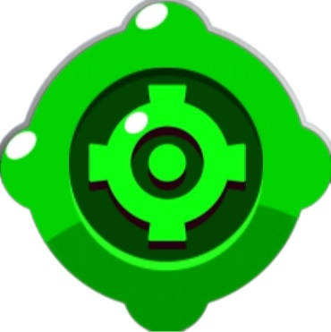

Shelly
"Armada con su escopeta, Shelly acribilla al enemigo a perdigones. No hay escondite que escape a la destrucción de su súper. ¡Los enemigos saldrán disparados!"

Shelly es una Brawler Común que se desbloquea al comenzar el juego. Tiene una salud moderada y una eficacia en cuanto a daño. Su escopeta causa más daño cuanto más cerca está de su objetivo, lo que la hace excelente para el combate de corto a medio alcance. Sus ataques también son extendidos. Su Súper puede derribar varios obstáculos y también derribará y aturdirá a los Brawlers enemigos. Su primer Gadget, Paso al frente, le permite lanzarse en la dirección que está mirando. Su segundo gadget, Tiro al Plato, aumenta el alcance de su ataque principal y reduce su extensión. Su primera Habilidad estelar, Choque mate, puede ralentizar a los enemigos durante 3 segundos cuando son golpeados por su Super. Su segunda Habilidad estelar, Primeros auxilios, hace que ella se cure 1800 cuando su salud cae por debajo del 40% y tarda en recargarse 15 segundos.
Ataque: Perdigones
"El arma de Shelly dispara una ráfaga de proyectiles de medio alcance. Mientras más perdigones impacten al objetivo, mayor será el daño."
Shelly dispara una ráfaga de proyectiles que inflige daño medio. El ataque es más efectivo a corta distancia ya que más de los proyectiles golpearán al oponente, pero el alcance máximo del ataque está bastante lejos. Esto le permite a Shelly sobresalir en el combate cuerpo a cuerpo, especialmente contra Brawlers con menor salud, su ataque en el recorrido se extiende haciendo un menor daño desde su alcance máximo.
Súper: Superbalas
"El superataque de Shelly arrasa con los refugios y con los enemigos. Quien sobreviva recibirá un impacto hacia atrás."
El súper de Shelly dispara una explosión de proyectiles muy dañina que no solo puede destruir obstáculos, sino también aturdir y repeler a los Brawlers enemigos. Las Superbalas pueden usarse defensivamente para alejar a los enemigos cercanos a Shelly o para interrumpir el Súper de un enemigo como el de Colt o Frank. Alternativamente, puede usarse para borrar arbustos y destruir obstáculos para dejar a los enemigos al descubierto. Es una de las pocas súper que se puede recargar muy fácilmente ocupando solo 3 ataques enteros, y al usar tu súper desde cerca donde impacten todas las balas se recargara de tal manera que solo falte un ataque dando la ventaja de hacer un combo con la súper y matar muy fácilmente a Pesos Pesados.
Gadgets

Paso al frente
"Shelly arremete hacia adelante ¡con una velocidad envidiable! Municiones por partida:3"
Shelly es capaz de lanzarse con un gancho cuando tiene el Gadget. Esto hace que usar su Super sea mucho más fácil y se pueda guardar para el momento perfecto y lanzarse contra un enemigo. Hay que tener cuidado cuando se use cerca de las paredes, ya que usarlo contra una pared detendrá el movimiento del Gadget.
Tiro al plato
"Por los siguientes 5 segundos los ataques de Shelly se centran en una zona más reducida y aumenta su alcance. Municiones por partida:3"
Durante los próximos 5 segundos, los ataques principales de Shelly centran en una zona más reducida y aumenta su alcance a 10 fichas. Un símbolo de gadget brillará sobre la cabeza de Shelly indicando el uso de este gadget, así como un joystick de ataque brillante. El tiempo de reutilización de este gadget comienza después de que se dispara el ataque.
Habilidades Estelares

Choque mate
"¡Las superbalas de Shelly ralentizan a los enemigos durante 4 segundos!"
Los Brawlers atrapados en el rango de la súper de Shelly, con la Habilidad estelar Choque mate, se ralentizan durante 4.5 segundos en una cantidad de ralentización considerable. Esto le permite a Shelly y a sus aliados alcanzar rápidamente a los enemigos.

Primeros auxilios
"Cuando la salud de Shelly está por debajo del 40%, recupera 2000 puntos de salud automáticamente. La habilidad tarda 15 segundos en recargarse."
Shelly tiene una barra amarilla similar a la barra de Home Run de Bibi, que tarda 15 segundos en cargarse. Si Shelly cae por debajo del 40% de salud, ella sanará instantáneamente 2000 de salud si la barra esta cargada; cuando este cargada la barra, se pondrá de color rojo, cuando se utilice la barra se agotará y empezara desde cero. Sin embargo, si Shelly tiene más del 40% de salud, pero un Brawler de alto daño como Bull la mata de un solo tiro, su Habilidad estelar no se activara y tendrá que esperar otros 15 segundos para recuperar la Habilidad después de reaparecer, claramente si no estas jugando en Supervivencia(Solo), independientemente de si fue cargado o no. La cantidad curada por la Habilidad estelar Primeros auxilios no se ve afectada por los Cubos de Poder de Supervivencia. También como dato se regenera 450 de salud en Megabrawler, claro si ella es el Megabrawler.
Consejos
- Shelly es ideal para el combate de medio alcance y es mortal a corta distancia.
- La propagación de los ataques de Shelly le permite borrar fácilmente los arbustos y exponer a los enemigos que se esconden en ellos.
- Aprovecha las paredes cuando te aproximes a los brawlers enemigos de largo alcance, como el de Colt o Rico, ya que pueden sobrepasar y derribar a Shelly con facilidad.
- Shelly es una excelente oponente para El Primo. Shelly perjudica a El Primo y puede derribarlo si las cosas se ponen difíciles con su Súper. Esto también puede usarse para alejarlo de una caja fuerte en un atraco
- Las Superbalas pueden ser un movimiento de apoyo, así como un movimiento defensivo. Debido a la capacidad de destruir obstáculos, Shelly puede destruir cualquier obstáculo para que sus compañeros de equipo puedan entrar y acabar con los enemigos. Es posible que algunas de las balas de las Superbalas golpeen al enemigo también.
- Shelly es una de los 3 Brawlers capaces de usar su Súper seguidamente, siendo los otros Frank, Griff Dynamike. Esto se hace usando su Súper contra un Brawler enemigo a quemarropa. Esto debería cargar completamente su Súper, permitiendo pasar al siguiente Brawler para repetir el proceso. Esto solo se puede hacer con Brawlers que pueden aturdir o ralentizar y causar daño por explosión.
Historial de balances
- 16 de Agosto de 2017:
- El tiempo de recarga de Shelly se incrementó a 1,5 segundos (de 1.25 segundos).

- El rango de ataque principal se redujo a 6,66 fichas (de 7,66 fichas).
- Los proyectiles de ataque principal están más separados.
- El tiempo de recarga de Shelly se incrementó a 1,5 segundos (de 1.25 segundos).
- 7 de Diciembre de 2017:
- Las estadísticas de daño y salud de todos los Brawlers fueron multiplicadas por 4.
- 16 de Enero de 2018:
- La desaceleración de la habilidad estelar de Shelly fue reducida a 2.5 segundos (de 3 segundos).
- La desaceleración de la habilidad estelar de Shelly fue reducida a 2.5 segundos (de 3 segundos).
- 21 de Marzo de 2018:
- El daño del ataque principal de Shelly fue reducido a 300 (de 320).
- El daño del ataque principal de Shelly fue reducido a 300 (de 320).
- 21 de Mayo de 2018:
- La salud de Shelly fue aumentada a 3600 (de 3200).

- La salud de Shelly fue aumentada a 3600 (de 3200).
- 29 de Mayo de 2018:
- El rango del ataque principal de Shelly se incrementó a 7.33 casillas (de 6.67 casillas).
- El rango del ataque principal de Shelly se incrementó a 7.33 casillas (de 6.67 casillas).
- 5 de Diciembre de 2018:
- Shelly y su otro aspecto, Shelly bandida, fueron remodeladas y el aspecto de Shelly estrella fue lanzado.
- 12 de Diciembre de 2018:
- El aspecto de Shelly estrella quedó disponible para todos los jugadores hasta el 1 de enero de 2019.
- 15 de Abril de 2019:
- El Rango de Ataque principal de Shelly se incremento a 7.67 fichas (de 7.33 fichas)
- La velocidad del proyectil de su ataque principal se incremento en un 5%
- El Rango de Ataque principal de Shelly se incremento a 7.67 fichas (de 7.33 fichas)
- 11 de Junio de 2019:
- La duración de la habilidad estelar ralentizadora de Shelly aumento a 3 segundos (de 2.5 segundos)
- La duración de la habilidad estelar ralentizadora de Shelly aumento a 3 segundos (de 2.5 segundos)
- 26 de Junio de 2019:
- Se agrego una nueva habilidad estelar: Primeros auxilios.
- 29 de Agosto de 2019:
- La salud de la habilidad estelar Primeros auxilios de Shelly bajo de 5040 a 2000.
- La salud de la habilidad estelar Primeros auxilios de Shelly bajo de 5040 a 2000.
- 18 de Setiembre de 2019:
- La salud de la habilidad estelar Primeros Auxilios bajo de 2000 a 1800.
- La salud de la habilidad estelar Primeros Auxilios bajo de 2000 a 1800.
- 23 de Octubre de 2019:
- Las animaciones de Shelly fueron remodeladas.
- 24 de Octubre de 2019:
- Se agregó el aspecto de Shelly Bruja. Apareció como un aspecto de Brawl-o-ween.
- 19 de Marzo de 2020:
- El aspecto de Shelly PSG se desbloqueaba ganando la PSG Cup.
- 2 de Julio de 2020:
- Los aspectos faciales de Shelly fueron remodelados.
- Se añadieron las skins plateada y dorada para Shelly.
- 9 de Setiembre de 2020:
- Se agregó el gadget "Tiro al Plato"
- 10 de Setiembre de 2020:
- La salud de Shelly aumento a 3800 de 3600.
- La cantidad de golpes necesarios para cargar su Super se redujo a 2 de 3.
- La salud de Shelly aumento a 3800 de 3600.
- 15 de Diciembre de 2020:
- La duración de la ralentización de Choque Mate de Shelly se incrementó a 4 segundos (de 3).
- La Habilidad Estelar Primeros Auxilios ahora se carga en 15 segundos (antes, 20 segundos).
- La duración de la ralentización de Choque Mate de Shelly se incrementó a 4 segundos (de 3).
- 27 de Enero de 2021:
- Shelly Bandida y Shelly Bruja recibieron animaciones faciales.
- 19 de Mayo de 2021:
- El rango de Paso al frente se incrementó a 3.33 fichas (de 3).
- La duración de la ralentización de Choque Mate se incrementó a 4,5 segundos (de 4).
- Primeros auxilios ahora cura 2000 de salud (antes 1800).
- El rango de Paso al frente se incrementó a 3.33 fichas (de 3).
- 16 de Junio de 2021:
- La velocidad de los proyectiles de Tiro al plato de Shelly se incrementó en un 20%.
- La velocidad de los proyectiles de Tiro al plato de Shelly se incrementó en un 20%.
- 9 de Julio de 2021:
- Se agregaron los aspectos de la Liga Master de América Latina de Shelly.
- 25 de Agosto de 2021:
- Su gadget Tiro al plato ahora afecta a todos sus ataques principales durante 5 segundos.
- Su gadget Tiro al plato ahora afecta a todos sus ataques principales durante 5 segundos.
- 30 de Agosto de 2021:
- El aspecto de Shelly Princesa fue añadido al juego. Fue un aspecto exclusivo de la Temporada 8 del Brawl Pass.
- 27 de octubre de 2021;
- Su clase fue cambiada a destructora (de luchadora)
Curiosidades
- Según Paul Chambers (ex-diseñador de Brawl Stars) y la comunidad, Shelly pertenece al "Western Trio" (Trío del Lejano Oeste) junto a Colt y Spike.
- Es la primera brawler que te dan, y es imposible conseguirla en cajas.
- Shelly, en realidad, es de la calidad "Brawler inicial". En la pantalla de información el nombre de la calidad está en un azul más brillante.
- Durante la fase beta del juego, la descripción la llamaba Shotgun Shelly
- Su nombre está basado en la palabra inglesa shell, que también significa perdigón en español
- Su descripción inicial fue cambiada durante la beta, esta pasando de una descripción con lore a la descripción de funcionalidad que tenemos ahora
- Shelly tiene un gatito negro llamado Kit. El gatito se puede ver arriba de su gorro en su aspecto de Bruja.